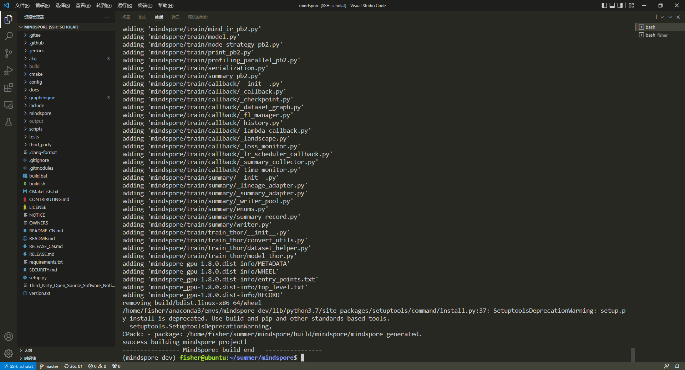
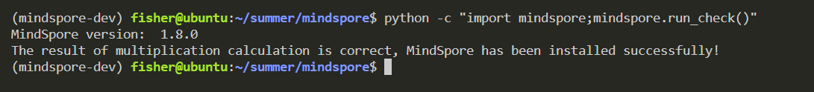

一、前言
本篇博客最初发布于Gitlink论坛中的MindSpore解读评注，链接在这里。
在参与MindSpore项目开发之前，第一件需要做的事情就是搭建开发环境，从源码编译安装MindSpore是一个绕不开的话题。本篇博客记录了我在Ubuntu18.04上从源码编译安装MindSpore的全过程。
二、环境准备
项目编译常用工具链的安装
在日常开发中，gcc、git、cmake等是常用的开发、构建工具，根据MindSpore文档中的工具版本要求，我们对本机上的工具版本进行检查，如果有版本不合适的工具，我们需要更新一下。
首先检查
gcc，版本要求为：7.3.0-9.4.0。我的gcc版本为7.5.0，符合要求。1
2
3
4
5fisher@ubuntu:~$ gcc --version
gcc (Ubuntu 7.5.0-3ubuntu1~18.04) 7.5.0
Copyright (C) 2017 Free Software Foundation, Inc.
This is free software; see the source for copying conditions. There is NO
warranty; not even for MERCHANTABILITY or FITNESS FOR A PARTICULAR PURPOSE.检查
git，一般的Linux系统都会预装Git。1
2fisher@ubuntu:~$ git --version
git version 2.17.1检查
cmake，版本要求为：>=3.18.3。由于apt默认源中安装的版本比较旧，因此我下载了二进制包并手动配置了环境变量。1
2
3
4
5
6cd ~
wget https://github.com/Kitware/CMake/releases/download/v3.23.2/cmake-3.23.2-linux-x86_64.tar.gz
tar zxvf cmake-3.23.2-linux-x86_64.tar.gz
mv cmake-3.23.2-linux-x86_64 cmake
echo -e "export PATH=$PWD/cmake/bin:\$PATH" >> ~/.bashrc
source ~/.bashrc
配置完成后检查安装效果1
2
3fisher@ubuntu:~$ cmake --version
cmake version 3.23.2
CMake suite maintained and supported by Kitware (kitware.com/cmake).
检查
autoconf，版本要求为：>=2.69。1
2
3
4
5
6
7
8fisher@ubuntu:~$ autoconf --version
autoconf (GNU Autoconf) 2.69
Copyright (C) 2012 Free Software Foundation, Inc.
License GPLv3+/Autoconf: GNU GPL version 3 or later
<http://gnu.org/licenses/gpl.html>, <http://gnu.org/licenses/exceptions.html>
This is free software: you are free to change and redistribute it.
There is NO WARRANTY, to the extent permitted by law.
Written by David J. MacKenzie and Akim Demaille.检查
libtool，版本要求为：>=2.4.6-29.fc30。命令行看不出是哪个小版本，但编译过程中没有任何错误。1
2
3
4
5
6fisher@ubuntu:~$ libtool --version
libtool (GNU libtool) 2.4.6
Written by Gordon Matzigkeit, 1996
Copyright (C) 2014 Free Software Foundation, Inc.
This is free software; see the source for copying conditions. There is NO
warranty; not even for MERCHANTABILITY or FITNESS FOR A PARTICULAR PURPOSE.检查
automake，版本要求为：>=1.15.1。1
2
3
4
5
6
7
8fisher@ubuntu:~$ automake --version
automake (GNU automake) 1.15.1
Copyright (C) 2017 Free Software Foundation, Inc.
License GPLv2+: GNU GPL version 2 or later <http://gnu.org/licenses/gpl-2.0.html>
This is free software: you are free to change and redistribute it.
There is NO WARRANTY, to the extent permitted by law.
Written by Tom Tromey <tromey@redhat.com>
and Alexandre Duret-Lutz <adl@gnu.org>.安装MindSpore需要的其他依赖库，这些库都可以通过
apt安装。1
sudo apt install libgmp-dev tcl patch libnuma-dev flex -y
如果前面5个常用工具（除cmake）没有安装，可以执行以下命令安装。1
sudo apt install gcc-7 git automake autoconf libtool -y
- 准备Python相关环境，使用
Anaconda创建一个新环境，新环境会自动安装最新版的wheel和setuptools。同时该环境也用于MindSpore开发，不会影响系统的Python环境。1
conda create -n mindspore-dev python=3.7
CUDA相关工具的安装
- 安装CUDA 10.1版本。将CUDA安装在
/usr/local/cuda-10.1中，同时配置环境变量。1
2
3
4
5
6cd ~
wget https://developer.download.nvidia.com/compute/cuda/10.1/Prod/local_installers/cuda_10.1.243_418.87.00_linux.run
sudo sh cuda_10.1.243_418.87.00_linux.run
echo -e "export PATH=/usr/local/cuda-10.1/bin:\$PATH" >> ~/.bashrc
echo -e "export LD_LIBRARY_PATH=/usr/local/cuda-10.1/lib64:\$LD_LIBRARY_PATH" >> ~/.bashrc
source ~/.bashrc
安装配置完成后检查安装结果1
2
3
4
5fisher@ubuntu:~$ nvcc --version
nvcc: NVIDIA (R) Cuda compiler driver
Copyright (c) 2005-2019 NVIDIA Corporation
Built on Fri_Feb__8_19:08:17_PST_2019
Cuda compilation tools, release 10.1, V10.1.105
安装cuDNN 8.0.5版本。解压后复制到CUDA中，同时记得调整文件的拥有者，防止出现权限问题。cuDNN的下载地址点这里。
1
2
3
4
5
6cd ~
tar zxvf cudnn.tgz
sudo chown -R root:root cuda/
sudo chmod a+r cuda/include/* cuda/lib64/libcudnn*
sudo cp cuda/include/* /usr/local/cuda-10.1/include
sudo cp cuda/lib64/libcudnn* /usr/local/cuda-10.1/lib64安装TensorRT 7.2.3版本。下载时注意选择对应版本，TensorRT的下载地址点这里。
1
2
3
4
5
6cd ~
tar zxvf TensorRT-7.2.3.4.Ubuntu-18.04.x86_64-gnu.cuda-10.2.cudnn8.1.tar.gz
cd TensorRT-7.2.3.4
echo -e "export TENSORRT_HOME=$PWD" >> ~/.bashrc
echo -e "export LD_LIBRARY_PATH=\$TENSORRT_HOME/lib:\$LD_LIBRARY_PATH" >> ~/.bashrc
source ~/.bashrc
其他工具的安装
- 安装Open MPI 4.0.3版本。直接参考官方文档的安装命令即可，我与官方的步骤的区别在于：我将安装路径设置在用户根目录下，并且文件夹命名中不带版本号。
1
2
3
4
5
6
7
8
9
10
11cd ~
curl -O https://download.open-mpi.org/release/open-mpi/v4.0/openmpi-4.0.3.tar.gz
tar xzf openmpi-4.0.3.tar.gz
cd openmpi-4.0.3
./configure --prefix=/home/fisher/openmpi
make
sudo make install
cd ~
echo -e "export PATH=$PWD/openmpi/bin:\$PATH" >> ~/.bashrc
echo -e "export LD_LIBRARY_PATH=$PWD/openmpi/lib:\$LD_LIBRARY_PATH" >> ~/.bashrc
source ~/.bashrc
安装配置完成后检查安装结果1
2
3fisher@ubuntu:~$ ompi_info --version
Open MPI v2.1.1
http://www.open-mpi.org/community/help/
- 安装LLVM 14.0.0版本。下载解压后配置环境变量即可，Github Release地址点击这里。
1
2
3
4
5
6cd ~
wget https://github.com/llvm/llvm-project/releases/download/llvmorg-14.0.0/clang+llvm-14.0.0-x86_64-linux-gnu-ubuntu-18.04.tar.xz
tar xvf clang+llvm-14.0.0-x86_64-linux-gnu-ubuntu-18.04.tar.xz
mv clang+llvm-14.0.0-x86_64-linux-gnu-ubuntu-18.04 llvm
echo -e "export PATH=$PWD/llvm/bin:\$PATH" >> ~/.bashrc
source ~/.bashrc
安装配置完成后检查安装结果1
2
3
4
5fisher@ubuntu:~$ clang --version
clang version 14.0.0
Target: x86_64-unknown-linux-gnu
Thread model: posix
InstalledDir: /home/fisher/llvm/bin
三、拉取源码并编译
拉取源码
1
git clone https://gitee.com/mindspore/mindspore.git
使用Conda激活MindSpore编译的Python环境
1
conda activate mindspore-dev
执行编译脚本
1
2cd mindspore
bash build.sh -d -e gpu -S on -j64
编译成功

四、安装MindSpore
安装
1
pip install output/mindspore_gpu-*.whl -i https://pypi.tuna.tsinghua.edu.cn/simple
验证安装成果
1
python -c "import mindspore;mindspore.run_check()"
输出正确结果
